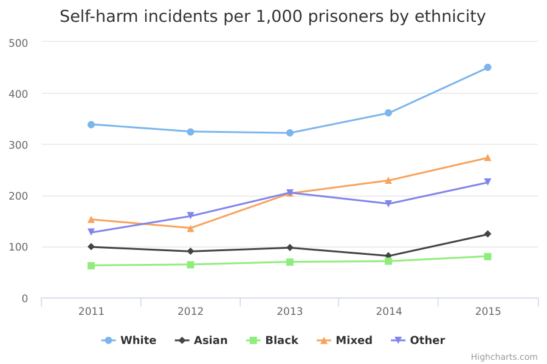

Self-harm in prison custody
The main facts and figures show that:
-
rates of self-harm for prisoners increased for the prison population in * general during the period measured
-
White prisoners had consistently higher rates of self-harm than other ethnic groups throughout the period measured
Things you need to know
These figures are the rates of incidents of self-harm per 1,000 prisoners. Individuals may commit multiple acts of self-harm within a year, which are reported as separate incidents. So, for example, 100 incidents may not have been carried out by 100 distinct individuals.
Estimates based on a larger number of respondents are generally more reliable. Therefore, the smaller numbers of respondents from ethnic minority backgrounds mean that estimates for these groups are less reliable than estimates for White people.
What the data measures
The data measures the number of incidents of self-harm per 1,000 prisoners in England and Wales per calendar year from 2011 to 2015, with a breakdown by ethnicity.
Self-harm in prison custody is defined as any act where a prisoner deliberately harms themselves, regardless of how they do so, what their intent is or how badly they injure themselves.
Why these ethnic categories were chosen
Prisoners’ ethnicity was recorded in the following broad categories:
- White
- Mixed/Multiple ethnic groups
- Asian/Asian British
- Black/African/Caribbean/Black British
- Chinese and Other ethnic group
Self-harm incidents per 1,000 prisoners by ethnicity

| 2011 | 2012 | 2013 | 2014 | 2015 | |
| White | 338.8 | 324.7 | 321.9 | 361.1 | 450 |
|---|---|---|---|---|---|
| Asian | 99 | 90.3 | 97.5 | 81.5 | 123.8 |
| Black | 63 | 64.8 | 69.9 | 71.2 | 80.9 |
| Mixed | 152.8 | 136.1 | 203.8 | 229.2 | 273.6 |
| Other | 127.3 | 159.3 | 205.2 | 183.5 | 225.3 |
Summary
-
in 2015, White prisoners had by far the highest rates of self-harm, with 450 incidents per 1,000 White prisoners
-
prisoners in the Chinese or Other ethnic group had the next highest rate of self-harm, at 274 incidents per 1,000 prisoners in that group in 2015
-
Asian and Black prisoners had much lower rates of self-harm, with 124 incidents per 1,000 and 81 per 1,000 respectively
Download image and data
Methodology and data type
Purpose Of Data Source
Admin data used for internal management information
Methodology
Self-harm is measured as the rate per 1,000 prisoners (taken from prison population monthly snapshots, averaged across a 12-month period).
Ethnicity was recorded for more than 95% of incidents of self-harm. Because of the very small number of incidents of self-harm where ethnicity is not known, this data has been excluded from the analysis.
Administrative data sources are reported as recorded. Information is provided by prisons and signed off locally.
Data wardens review the data, but as with all large administrative surveys errors and omissions can occur.
Data type
Admin data
Suppression rules
Values of 2 or fewer are suppressed in relation to individuals (not incidents, where no disclosure applies).
Rounding
Rates per 1,000 are rounded to 1 decimal place
Further technical information
Type of statistic: Self-Harm and prison population are National Statistics
Data source details
-
Ministry of Justice
-
24 November 2016
-
24 November 2016
-
30 November 2017
-
Annual